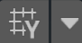
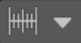
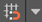
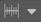
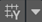

Unity provides a visual grid in the Editor’s SceneA Scene contains the environments and menus of your game. Think of each unique Scene file as a unique level. In each Scene, you place your environments, obstacles, and decorations, essentially designing and building your game in pieces. More info
See in Glossary view window, which can help precisely align GameObjectsThe fundamental object in Unity scenes, which can represent characters, props, scenery, cameras, waypoints, and more. A GameObject’s functionality is defined by the Components attached to it. More info
See in Glossary by snapping (moving) them to the nearest grid location.
You can snap a GameObject to a grid projected along the X, Y, or Z axes in several ways:
You can also transform a GameObject in increments without aligning it with the gridlines. If you need to change how much you are moving, rotating, or scaling, you can change the increment snap values.
By default, the grid is hidden, but you can make it visible and change which axis it appears along. You can customize the grid in appearance and behavior by changing the following:
Many of these actions support keyboard shortcuts. You can see which key combinations are assigned to these actions and use the Shortcuts Manager to customize them.
| Icon | Actions |
|---|---|
|  Grid visibility |
Toggle grid on or off Change grid axis Change grid opacity Move grid to gizmo handle or back to origin |
| Grid snapping |
Toggle grid snapping on or off Change grid size Align a GameObject to an axis |
|  Snap increment | Change the default increment snap values |
Note: The settings on the Grid and Snap Overlay are global to all Scene viewsAn interactive view into the world you are creating. You use the Scene View to select and position scenery, characters, cameras, lights, and all other types of Game Object. More info
See in Glossary.
This section provides information on how to perform these actions:
You can align a GameObject to either the closest grid point on a single axis, or on all axes at once.
To align a GameObject to the closest point on a grid for a specific axis:
In the Grid and Snap Overlays toolbarA row of buttons and basic controls at the top of the Unity Editor that allows you to interact with the Editor in various ways (e.g. scaling, translation). More info
See in Glossary, open the grid snapping drop-down menu ().
In the Align Selected section, click the X, Y, or Z button that matches the axis you want to push to.
To align a GameObject on all axes at once:
Select the GameObject(s) you want to align to the grid.
Use the Ctrl+\ (Windows) or Cmd+\ (macOS) shortcut to push the GameObject(s) onto the grids on all axes.
Alternatively, from the Grid and Snap Overlays toolbar, open the grid visibility drop-down menu () and in the Align Selected section, click All Axes.
To turn on automatic snapping to the grid:
When you enable automatic grid snapping, the Move, Rotate, and Scale transform tools snap the selected GameObject(s) to the grid along the active gizmoA graphic overlay associated with a GameObject in a Scene, and displayed in the Scene View. Built-in scene tools such as the move tool are Gizmos, and you can create custom Gizmos using textures or scripting. Some Gizmos are only drawn when the GameObject is selected, while other Gizmos are drawn by the Editor regardless of which GameObjects are selected. More info
See in Glossary axis. If you need the GameObject to move in smaller increments, you can also transform it incrementally.
To move, rotate, or scale by increment snap values:
To change the default increment snap values:
From the Grid and Snap Overlays toolbar, open the snap increment drop-down menu ().
The Increment Snap section contains several properties that let you set the same value for all axes or different values:
Move: With the link icon selected, enter a uniform increment snap value for all axes, or unlink the axes and set different increment snap values in the X, Y, and Z axis properties.
Rotate: Enter a rotation increment value in degrees.
Scale: Enter a scale increment value as a scale factor. For example, if the Scale value is 2, the selected GameObject will scale at an increment of twice its original size.
This section provides information on customizing the following:
Toggle grid visibility by clicking the grid visibility icon () on the Grid and Snap Overlay toolbar to display or hide the grid on any axis (X, Y, Z). If you are in orthographic mode (Iso), Unity chooses the view.
To change which axis the grid appears on:
From the Grid and Snap Overlays toolbar, open the grid visibility drop-down menu ().
From the Grid Plane section, select the axis you want to appear.
You can set the size of the grid lines that display in the Scene view window. The size of the grid affects how your grid looks and how your GameObjects automatically snap to the grid, but doesn’t affect how your GameObjects move, rotate, or scale in increments.
If you set a size for all axes at once, a uniform, square-based, grid displays. However, you can also use different values on any of the three axes to display a non-uniform, rectangular-based, grid. By default, the grid is set to a uniform distance of 1 on all axes.
To resize the grid:
Tip: Use these keyboard shortcuts to increase or decrease the size of the grid:
To change the color of the visible grid lines in the Scene view window:
Open the Preferences window.
Click on the Colors category from the list to see the Colors page.
Select a new color using the Grid property’s color picker.
If the grid lines are too light or too dark, you can adjust them:
From the Grid and Snap Overlays toolbar, open the grid visibility drop-down menu ().
Adjust the Opacity using the slider.
From the grid visibility drop-down menu () in the Grid and Snap Overlay toolbar, use the Move To section to move the grid to the handle of the selected GameObject (Handle) or back to the default position (Origin).
To reset the grid axis and opacity settings to their defaults:
From the Grid and Snap Overlays toolbar, open the grid visibility drop-down menu ().
Click the More menu (⋮) and then click Reset.
To reset the size of the grid to the default:
From the Grid and Snap Overlays toolbar, open the grid snapping drop-down menu ().
Click the More menu (⋮) and then click Reset.
To reset the increment snap values to the default:
From the Grid and Snap Overlays toolbar, open the snap increment drop-down menu ().
Click the More menu (⋮) and then click Reset.
Only the values under the Increment Snap section return to their original default values.
You can perform the following actions with these default Unity shortcuts:
| Action | Default shortcut |
|---|---|
| Increase Grid Size |
Ctrl+] (Windows) or Command+] (macOS) |
| Decrease Grid Size |
Ctrl+[ (Windows) or Command+[ (macOS) |
| Push to Grid (Align Selection to Grid) |
Ctrl+\ (Windows) or Command+\ (macOS) |
| Reset Grid | (no shortcut by default) |
To change these default keyboard shortcuts, use the Shortcuts Manager.